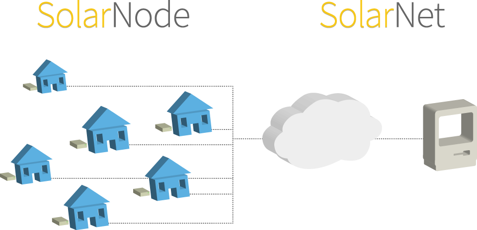
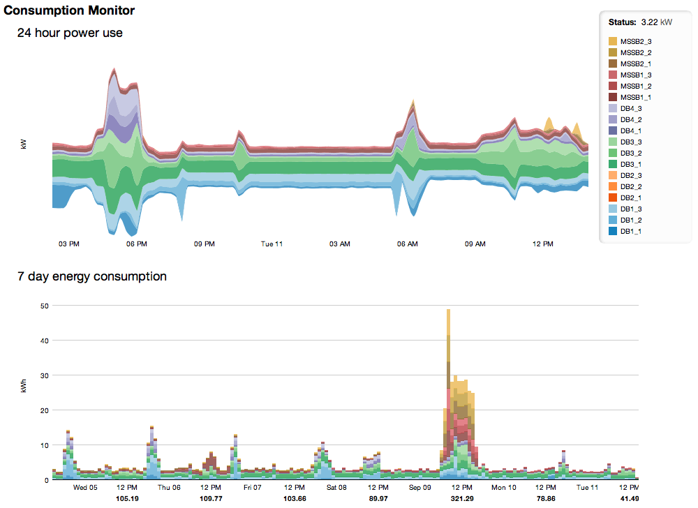

SolarNetwork is a framework for collecting and viewing information about your personal or commercial energy production and consumption. Some applications of this technology are:
SolarNetwork is also a framework for participating in "smart grid" electricity networks. Some applications of this technology are:
Note that although SolarNetwork has focused heavily on electric energy, the platform has been designed with other systems in mind, such as water and natural gas.
SolarNetwork is composed of two parts: a small internet-connected device that you install at home (we like to call them SolarNodes, or nodes for short), and a service "in the cloud" that the devices communicate with (we call this service SolarNet).
Thus, the general idea is that you get your hands on a node, configure it to communicate with your electricity meter, your solar inverter, your battery charge controller, your weather station, etc, and let the node collect interesting information from those devices and store it in the SolarNet service. From there you have access to pre-built web pages to visualize your energy footprint, compare your footprint to other users, and look for ways to maximize your energy efficiency.
The SolarNet service also provides an easy API for developers or advanced enthusiasts to build your own applications using the collected data.
As a participant in SolarNetwork what you will ultimately see are interesting visualizations of all the data collected by your SolarNode. Perhaps you'd like to see the electricity consumption of a building broken down by individual circuits:
Or just the overall consumption for a whole house. If you've got solar panels as well, you might like to see your solar panel generation correlated to weather and market electricity prices, focus solely on solar panel performance, or convey your solar panel energy production in terms of CO2, diesel, and money saved.
There are many possibilities, and these examples were all built using the SolarNet web API, using HTML5 technologies so they work in most any modern web browser. If you'd like to see your energy information in some other way, it is entirely possible!
SolarNetwork is built entirely as open source software. We are passionate about open source in general, but believe even more strongly that the software interacting with your home and your energy network should be completely transparent.